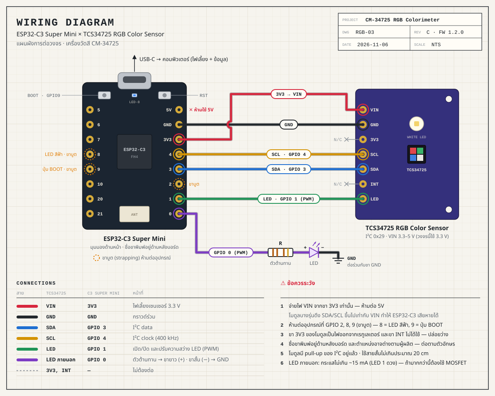

01SampleWB UNCAL
SATURATED
REF
—
- sRGB
- —
- HSV
- —
- HSL
- —
- CIE L*a*b*
- —
- CIE xy
- —
ΔE00 vs REF
—
ยังไม่ได้ตั้งสีอ้างอิง
02Channels · raw counts—
02BPhotometryวัดแสงแวดล้อม — ควรปิด LED
Illuminance
—lx
CCT · DN40
—K
CCT · McCamy
—K
IR component
—cnt
Source xy · DN25
—
Sample rate
—Hz
03Controls
Sensor LED
LED OFF
ไฟส่องบนบอร์ดเซนเซอร์ · คีย์ L
External LED
LED OFF
LED ที่ต่อเพิ่ม · GPIO 0 · คีย์ X
Acquisition
Gain AUTO
Integration AUTO
Auto-range
Stream interval
Averaging
Calibration
not set
not set
DARK — ระบบปิด LED ทั้งสองดวงชั่วคราวเพื่อวัดแสงรบกวนแล้วหักออก
WHITE — วางกระดาษขาว/แผ่นอ้างอิงสีขาว ที่ระยะเดียวกับการวัดจริง แล้วกด
Device
Board RGB LED
Sample · sRGB—
Source · DN25—
Reference—
Planckian locus1667–25000 K
sRGB gamut · D65primaries
จุดวงกลม = สีของวัตถุ (หลัง White balance) · จุดเพชร = สีของแสงที่ตกกระทบเซนเซอร์ ใช้ดูอุณหภูมิสีของแหล่งกำเนิดแสง
Transmittance & Absorbance
not set
| Ch | I₀ | I | %T | A |
|---|
ใส่ cuvette ที่มีตัวทำละลายเปล่า (blank) แล้วกด BLANK จากนั้นเปลี่ยนเป็นสารตัวอย่าง · A = −log₁₀(I/I₀) · ช่องที่ดูดกลืนมากที่สุด (สีส้ม) มักเป็นสีคู่ตรงข้ามของสารละลาย · แนะนำให้ปิด Auto-range ระหว่างทดลอง
Standard curve · Beer–Lambert
| # | Conc | A | Residual |
|---|
ต้องมีสารมาตรฐานอย่างน้อย 2 จุด
Unknown (current sample)
—
| # | Time | Label | Color | R | G | B | C | Gain | T ms | L* | a* | b* | Lux | CCT | A(R) | A(G) | A(B) | ΔE00 |
|---|
ตารางแสดง 300 แถวล่าสุด · ไฟล์ CSV มีข้อมูลครบทุกแถวและทุกคอลัมน์ (เปิดใน Excel / Google Sheets ได้)

Wiring
| TCS34725 | ESP32-C3 Super Mini |
|---|---|
| VIN | 3V3 (ห้ามใช้ 5V) |
| GND | GND |
| SDA | GPIO 3 |
| SCL | GPIO 4 |
| LED | GPIO 1 |
| 3V3, INT | ไม่ต้องต่อ |
| LED ภายนอก | GPIO 0 → ตัวต้านทาน → ขายาว (+) · ขาสั้น (−) → GND |
ห้ามต่ออุปกรณ์ที่ GPIO 2, 8, 9 (ขาบูต) · ไฟสีฟ้าบนบอร์ด (GPIO 8) กะพริบทุกครั้งที่ส่งข้อมูล · ปุ่ม BOOT (GPIO 9) = เปิด/ปิด LED ของเซนเซอร์ · ชื่อขาพิมพ์อยู่ด้านหลังบอร์ด
Quick start
- อัปโหลด firmware
RGBMeter.ino(Board: ESP32C3 Dev Module · USB CDC On Boot = Enabled) - เปิดหน้านี้ด้วย Chrome หรือ Edge แล้วกด BLE หรือ USB
- กด DARK แล้ววางกระดาษขาวกด WHITE
- วางวัตถุ อ่านค่าสี · Set REF เพื่อเทียบ ΔE
- งานสารละลาย: แท็บ Absorbance → BLANK → เพิ่มสารมาตรฐาน → อ่านความเข้มข้นของสารที่ไม่ทราบค่า
- ไม่มีอุปกรณ์? กด Demo เพื่อทดลองหน้าเว็บ
Keyboard
| L | เปิด/ปิด LED ของเซนเซอร์ |
| X | เปิด/ปิด LED ภายนอก |
| M | วัดหนึ่งครั้ง |
| H | Hold ค้างค่า |
| R | ตั้งสีปัจจุบันเป็นสีอ้างอิง |
| Space | บันทึกค่าลง Data log |
Commands (USB / BLE)
LED 0|1|T | ปิด / เปิด / สลับ |
PWR 0–100 | ความสว่าง LED (%) |
XLED 0|1|T | LED ภายนอก ปิด / เปิด / สลับ |
XPWR 0–100 | กำลังไฟ LED ภายนอก (%) |
GAIN 1|4|16|60 | อัตราขยาย |
IT ms · ATIME n | เวลาอินทิเกรต 2.4–614 ms |
AGC 0|1 | Auto-range |
RATE ms · STREAM 0|1 | อัตราส่งข้อมูล / เปิด-ปิด |
READ | วัดหนึ่งครั้ง |
PIX OFF|AUTO|r g b | ไฟ RGB บนบอร์ด (เฉพาะ S3) |
SAVE · DEFAULTS · INFO | บันทึก / ค่าเริ่มต้น / ข้อมูล |